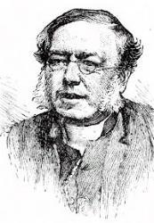

|
|
【敬拜上帝】 |
|
1 Worship the Lord in the beauty of holiness, 2 Low at his feet lay thy burden of carefulness, 3 Fear not to enter his courts, in the slenderness 4 These, though, we bring them in trembling and fearfulness, 5 Worship the Lord in the beauty of holiness,
|
|
|
|
|
|
|
|

https://www.youtube.com/watch?v=yqkClXl8kgg -
https://www.youtube.com/watch?v=Yzzt2HN-fNI -
| Text: | Worship the Lord in the beauty of holiness |
| Author: | John Samuel Bewley Monsell (1811-1875) |
| Short Name: | John S. B. Monsell |
| Full Name: | Monsell, John S. B. (John Samuel Bewley), 1811-1875 |
| Birth Year: | 1811 |
| Death Year: | 1875 |
John Samuel Bewley Monsell (b. St. Colomb's, Londonderry, Ireland, 1811; d. Guilford, Surrey, England, 1875)

was educated at Trinity College in Dublin and served as a chaplain and rector of several churches in Ireland after his ordination in 1835. Transferred to England in 1853, he became rector of Egham in Surrey and was rector of St. Nicholas Church in Guilford from 1870 until his death (caused by a construction accident at his church). A prolific poet, Monsell published his verse in eleven volumes. His three hundred hymns, many celebrating the seasons of the church year, were issued in collections such as Hymns and Miscellaneous Poems (1837), Spiritual Songs (1857), Hymns of Love and Praise (1863), and The Parish Hymnal (1873).
Bert Polman
| Short Name: | Tom Fettke |
| Full Name: | Fettke, Tom, 1941- |
| Birth Year: | 1941 |
Thomas E. Fettke (b. Bronx, New York City, 1941)

Educated at Oakland City College and California State University, in Hayward, CA, Fettke has taught in several public and Christian high schools and served as minister of music in various churches, all in California. He has published over eight hundred compositions and arrangements (some under the pseudonyms Robert F. Douglas and David J. Allen) and produced a number of recordings. Fettke was the senior editor of The Hymnal for Worship and Celebration (1986).
Bert Polman
Worship The Lord In the Beauty of His Holiness History
O Worship the Lord in The Beauty of Holiness is a composition by John Samuel
Bewley Monsell.
Monsell was born in 1811 in St. Columb's, Londonderry. He was an Irish clergyman
and poet. He trained for the ministry at Trinity College in Dublin, Ireland.
He experienced some personal tragedies in his life. He lost his eldest son
Thomas in 1855. Thomas was only 18 and died on the way to the famous Crimean
War. His eldest daughter Elizabeth died at the age of 28 in Torquay.
Monsell passed away in 1875 from an infected wound caused by a fall from a
boulder while inspecting the rebuilding of St Nicholas' Church, Guilford,
Ireland.
This hymn was first published in Monsell's Hymns of Love and Praise for the
Church.
It is based on Psalm 96 which states in verse 8, O worship the Lord in the
beauty of holiness; fear before him, all earth.
This song is a call for all of us to worship the Lord in the beauty of his
holiness. His holiness is expressed or seen in nature. When we see nature we see
his signature and his handiwork.
We bow before him because we know that we are descended from him. He is the one
who created us. Worship is an acknowledgment of the fact that we are His
creation.
All of us are called upon to proclaim his holiness and glory to all the world.
Let the world know that we believe in him.
O Worship The Lord In The Beauty of Holiness Lyrics
O worship the Lord in the beauty of holiness!
Bow down before him, his glory proclaim;
with gold of obedience, and incense of lowliness,
kneel and adore him: the Lord is his Name!
Low at his feet lay thy burden of carefulness,
high on his heart he will bear it for thee,
and comfort thy sorrows, and answer thy prayerfulness,
guiding thy steps as may best for thee be.
Fear not to enter his courts in the slenderness
of the poor wealth thou wouldst reckon as thine;
for truth in its beauty, and love in its tenderness,
these are the offerings to lay on his shrine.
These, though we bring them in trembling and fearfulness,
he will accept for the Name that is dear;
mornings of joy give for evenings of tearfulness,
trust for our trembling and hope for our fear.
O worship the Lord in the beauty of holiness!
bow down before him, his glory proclaim;
with gold of obedience, and incense of lowliness,
kneel and adore him: the Lord is his Name!
For more links to stories and lyrics of hymns click here.
In the video below, Chester Cathedral congregation singing - O Worship The Lord
In The Beauty of his Holiness.
https://www.christianmusicandhymns.com/2019/09/o-worship-lord-in-beauty-of-his.html
John Samuel Bewley Monsell
John Samuel Bewley Monsell (2 March 1811 - 9 April 1875) was an Irish Anglican clergyman and poet.
Life[edit]
The son of Thomas Bewley Monsell, Archdeacon of Derry, he was born in St. Columb's, Londonderry, and educated at Trinity College, Dublin, receiving a BA in 1832 (and an LL.D in 1856). He was ordained deacon in 1834, and priest in 1835.[1] His sister was the noted botanical artist Diana Conyngham Ellis.[2] He lived[3] in Milford House, Co. Tipperary for a time.
He married Anne, daughter of Bolton Waller, of Shannon Grove and Castletown on 15 January 1835. It is widely noted that eldest son Thomas Bewley Monsell, a Lieutenant in the 19th Regiment, died on the way to the Crimean War, aged 18, in a shipwreck off Italy. However, the date of death given by newspapers (February 16th) apparently predates the late-April fire and sinking of the SS Croesus offshore from the Monastery of San Fruttuoso Monastery near Genoa. The eldest daughter Elizabeth Isabella died in Torquay at the age of 28 in 1861. Another daughter, Jane Diana, married the Rev. C. W. Furse in 1859. Through his son William Thomas Monsell, a magistrate and inspector of facturers, Monsell was grandfather to the artist Elinor Darwin (née Monsell).[4][5][6]
His brother Charles, also a clergyman, married Harriet O'Brien, who refounded the Community of St John Baptist at Clewer near Windsor after her husband's death in Italy. Through Charles and Harriet, John Monsell became influenced by the Oxford Movement and an admirer of Edward Bouverie Pusey, and also became acquainted with William Ewart Gladstone, with whom he maintained a correspondence.[7]
He was responsible for the building or rebuilding of three of his churches: Ramoan, at Ballycastle, County Antrim, St Jude, Englefield Green, during his incumbency at Egham, and St. Nicolas' Church, Guildford.
While inspecting the rebuilding of the latter, Monsell fell from a boulder, and subsequently died in 1875 from an infected wound.[1]
Service[edit]
- Curacy of Templemore (Diocese of Derry) 1834-1836
- Chaplain of Chapel of Ease (St. Augustine’s) 1836-1838
- Chaplain of Magdalene College, Belfast 1843-1846
- Rector of Dunaghy 1846-1847
- Rector of Ramoan (Diocese of Connor) 1847-1853
- Chancellor of Connor 1847-1853
- Vicar of Egham, near Windsor 1853-1870
- Rector of St. Nicolas' Church, Guildford and Chaplain to Queen Victoria 1870-1875.
Published writings[edit]
Monsell was a prolific hymnist. He published eleven volumes of poems and about 300 hymns.
His books include: Hymns and Miscellaneous Poems (1837), Parish Musings: In verse (1850), Spiritual Songs for the Sundays and Holy Days Throughout the Year (1859), Hymns of Love and Praise for the Church's Year (1863), Our New Vicar (1867), Litany Hymns (1870).[1]
His hymns include:
- "Fight the good fight with all thy might"
- "Mighty Father! Blessed Son"
- "On our way rejoicing as we homeward move"
- "Sing to the Lord a joyful song"
- "O Worship the Lord in the beauty of holiness!"
- "I hunger and I thirst"